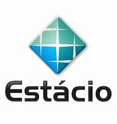

Profissional Sênior de TI com mais de 20 anos de experiência em operações e gestão de projetos. Atualmente
trabalhando como Analista de Integração Sênior na QINTESS IT SOLUTIONS desde 2010, focando na satisfação do
cliente e melhoria contínua.
Experiência
Analista de Integração Sênior
QINTESS IT SOLUTIONS | 2010 - Presente
Liderando melhorias contínuas e implementando mudanças estruturadas para aprimorar a jornada do cliente.
Analista de Suporte Pleno
DAMOVO-BRASIL S/A | 2001 - 2010
Participação em estratégias operacionais e de processos, liderando com sucesso a implementação do site São
Paulo para atender às demandas de Contact Center e Comunicação Unificada.
Analista de Suporte
MATEC-INTERPRISE | 1999 - 2001
Focado na Experiência do Cliente, transformando o modelo de atendimento convencional em um formato humanizado
e disruptivo.
Habilidades Profissionais
Gestão de operações e projetos, pensamento estratégico, melhoria contínua, satisfação do cliente.
Formação Acadêmica
MBA em Engenharia DevOps e Soluções em Nuvem
Universidade Presbiteriana Mackenzie
Mestrado em Tecnologia de Negócios - MBT
Faculdade de Tecnologia de São Paulo - FATEC

Bacharelado em Engenharia Elétrica
Universidade Estácio de Sá São Paulo - SP
Tecnólogo em Redes de Computadores
Universidade Estácio de Sá São Paulo - SP
Certificaçoes Profissionais
Certificação de Desenvolvedor Full-Stack
Certificação Microsoft Azure
Certificação AWS
Teste de Formação Academica
Atividades
Atualmente atuando como Analista de Integração Sênior na QINTESS IT SOLUTIONS desde 2010. Concluiu MBA em
Engenharia DevOps e Solução em Nuvem, Mestrado em Tecnologia de Negócios, Bacharelado em Engenharia Elétrica
e Tecnólogo em Redes de Computadores. Certificado como Desenvolvedor Full-Stack, com treinamento em
Microsoft Azure e AWS, demonstrando versatilidade e atualização constante em tecnologias emergentes.